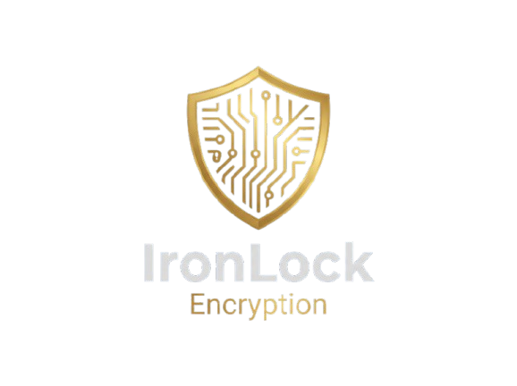

IronLock V1.0 is the ultimate digital vault for Windows. No internet connections, no subscriptions, no hidden tracking. Lock, encrypt, and shred your files with military-grade security operating exclusively on your hardware.
Get Lifetime License - $15 USDUnlike the competition, IronLock does not connect to the internet. There are no hackable "automatic cloud backups" or telemetry. Your data never leaves your hard drive.
Security shouldn't be a monthly rental. Pay $15 once and get a lifetime license for both the Installable and Portable versions. End of story.
No invasive kernel drivers slowing down your PC. IronLock uses AES-256 encryption and native Windows permissions to guarantee unbreakable protection without harming your OS.
Lock and hide entire folders on your computer. Neither Windows Explorer nor other programs can access them without your master password.
Create shielded containers with AES-256-GCM encryption. When you move a file to the vault, the original is automatically and securely shredded.
Take your encrypted files wherever you go. Run IronLock directly from a flash drive without installing anything or leaving traces on the host computer.
Delete files permanently and irretrievably. Our algorithm overwrites your data, making recovery impossible even with forensic software.
Protection against physical coercion. Set up a fake password that opens a dummy vault with harmless data, keeping your true secrets hidden.
Manage and protect your passwords, bank cards, and secret notes directly inside your encrypted vault, isolated from traditional password managers.
Absolutely not. IronLock is designed to work 100% offline. It does not require the internet to activate, lock folders, or encrypt files. Your privacy is guaranteed by design.
For your security, IronLock uses real encryption with no "backdoors". If you lose the master password, it is mathematically impossible to recover the encrypted data from your vault.
No. It is a one-time payment. With your purchase, you get perpetual access to version 1.0 (both the Installer and Portable Executable) with no annual renewals or hidden fees.
Currently, IronLock V1.0 is designed and optimized exclusively for the Windows (64-bit) ecosystem, leveraging its native permission systems for maximum effectiveness.